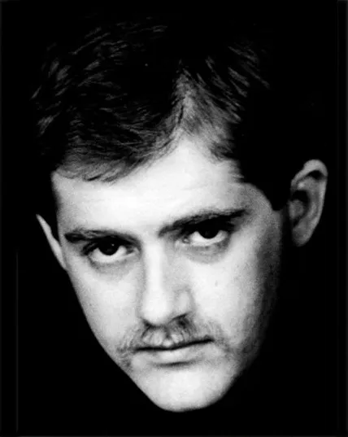
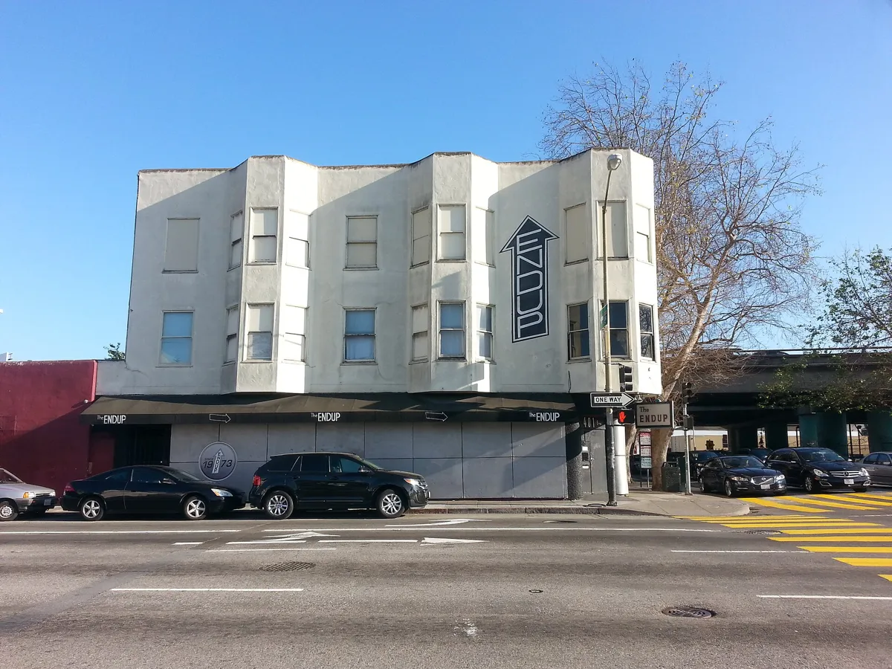
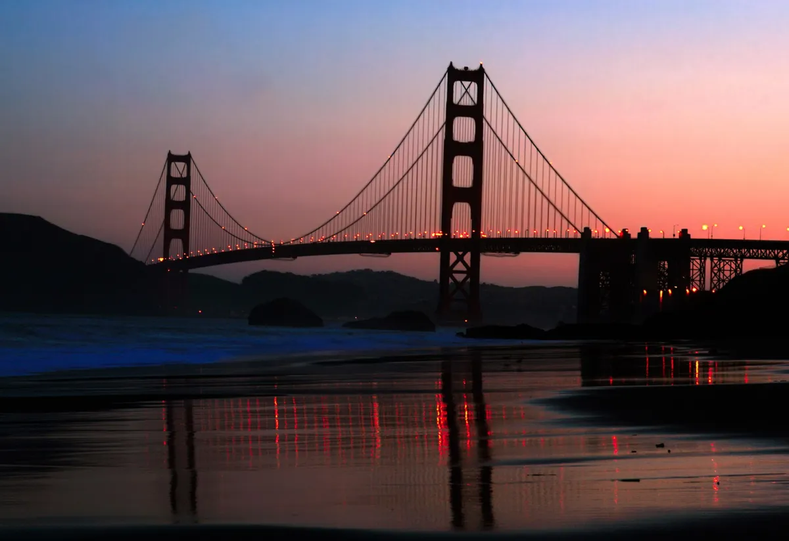
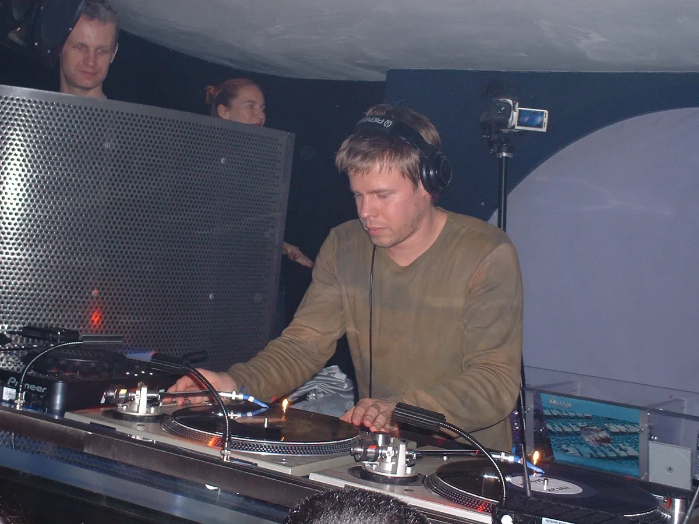
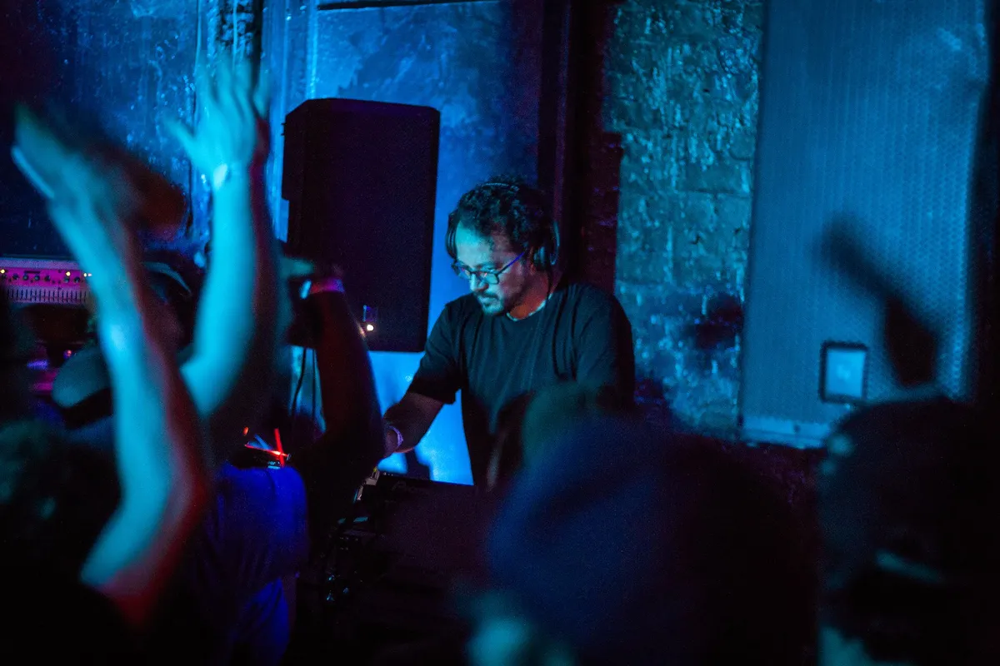
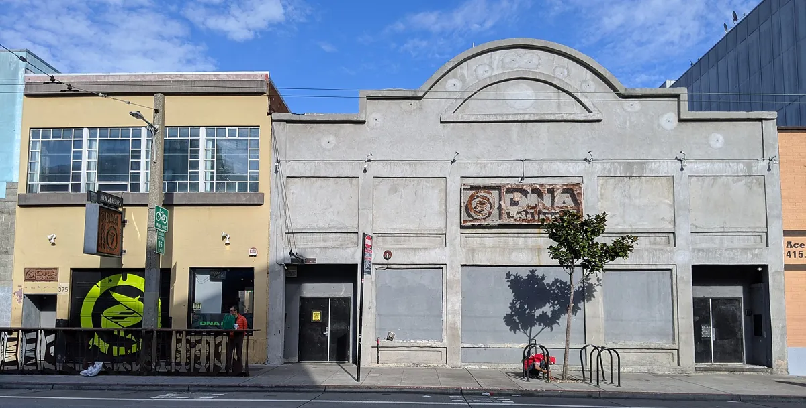
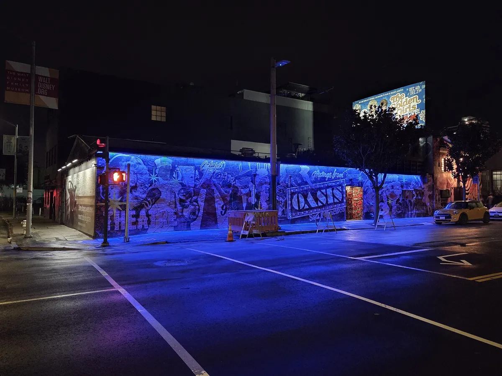

San Francisco clubs
The best clubs in San Francisco, from the Trocadero to Public Works
Hi-NRG was born on a SoMa dance floor and the EndUp has been open since 1973. The rooms that carry that on are a short walk apart.
Plan your visit
Where to go out in San Francisco.
The best nightlife in San Francisco is concentrated in SoMa, south of Market Street. Eleventh Street has DNA Lounge, Audio and Oasis within a block or two. Folsom Street has 1015 Folsom, Raven Bar, Cat Club and f8. Sixth Street has the EndUp and Monarch, and The Grand is on 4th Street. Public Works and The Great Northern are in the Mission.
For another West Coast city, the Los Angeles clubs guide covers LA.
Clubs built around the sound.
Time Out's list of San Francisco nightclubs opens with a fair warning: people here do not stay out especially late, but they take the dance floor seriously. Most of the clubs are packed into a few blocks of SoMa, and the best of them are known for the sound system and the booking, not the table service.
The history is bigger than the rooms. San Francisco gave disco Sylvester and hi-NRG Patrick Cowley in the late 1970s, kept the EndUp's Sunday parties going for decades, and in the 1990s took in an English sound system that threw house parties on a beach under the Golden Gate Bridge. The San Francisco clubs open now sit on top of all of that, and a few of them stand in the same buildings.
Trocadero Transfer and hi-NRG.
The Trocadero Transfer opened in December 1977 at 520 4th Street, at Bryant, in SoMa. It was founded by Dick Collier in a building that had once housed KQED, and it ran on Saturday nights until 6am. It was compared to Studio 54, and it threw themed nights called the White, Black and Red parties.
Bobby Viteritti was its main DJ from 1978 to 1981, and Patrick Cowley, Steve Fabus and Robbie Leslie played there too.

Cowley had moved to San Francisco in 1971. He played synthesizer on Sylvester's 1978 album Step II, which included "You Make Me Feel (Mighty Real)". Sylvester had come to the city in 1970, sung with the Cockettes, and became known as the Queen of Disco.
Cowley is credited as the creator of hi-NRG. His own records include "Menergy", released in 1981. He died in the Castro on 12 November 1982, one of the early victims of AIDS. Sylvester died in San Francisco in December 1988.
The building has kept changing hands. Gus Bean's Crew Club, his first house club, opened there in spring 1989, and the Toontown raves followed in the early 1990s. It was Glas Kat from 2000 to 2011, and it is now The Grand, a five-level club Time Out describes as Vegas-style and dressy.
The EndUp.
The EndUp opened on 15 November 1973 at 401 6th Street, at Harrison, in a former hotel. It began as an offshoot of Al Hanken's RoundUp, an LGBTQ country-western bar, and it has run a Sunday tea dance since 1979. It is known as an after-hours club, and Time Out calls out its patio.

From 1979 to 1982 it ran Church, a night that started at 6am for people leaving the Trocadero, with Steve Fabus and Patrick Cowley on the decks. In 1981 and 1982 it also held Menergy parties, named after Cowley's record. Later came Fag Fridays, from 1996 to 2008, with David Harness, and Sunrise Sunday.
The music is gay disco and underground house, and Derrick Carter, Doc Martin, Mark Farina, Miguel Migs, DJ Sneak and Josh Wink are among the DJs who have played. The club turns up in Tales of the City and in the 2000 film Groove.
1990s house and the Wicked crew.
In spring 1991 a crew from south-east England, the Wicked sound system, arrived in San Francisco. The SF Bay Guardian traces their Full Moon parties over six years, and the first one was held at Baker Beach, under the Golden Gate Bridge. Garth, Jenö, Thomas and Markie were the DJs. In 1995 Wicked were the first and only sound system at Burning Man.

The Bay Guardian piece marked a Wicked reunion at The Mighty, at 119 Utah Street.
The big indoor room of the decade was 1015 Folsom. The building had been a gay bathhouse until the city closed it in 1984; it reopened as Das Klub in 1986 under Ira Sandler and took the name 1015 Folsom in 1989, days before the Loma Prieta earthquake. It has about 20,000 square feet in five rooms over three floors, holds around 1,500 people, and it is one of the longest-running, continuously operating dance clubs in the US. It appears in Between the Beats, a documentary about the 1990s rave scene.

Madonna, Tiësto, Giorgio Moroder and Fatboy Slim have all played it. In 2025 it put in a new d&b audiotechnik system.
The best clubs in San Francisco now.
Time Out's list of the best clubs in San Francisco runs from a 1990s throwback bar to a five-level Vegas-style club. The table keeps to the rooms where the dance floor is the point.
| Club | Area | Music and character | Best for |
|---|---|---|---|
| Public WorksGoogle MapsResident Advisor | Mission | Funktion-One and sprung hardwood floors | House and techno |
| AudioGoogle MapsResident Advisor | SoMa | The first Funktion-One 3D surround system | Techno, house and EDM |
| MonarchGoogle MapsResident Advisor | SoMa | A basement club with a Void Acoustics system | Dancing close to the sound |
| 1015 FolsomGoogle MapsResident Advisor | SoMa | Five rooms over three floors, about 1,500 people | Big nights since 1989 |
| The EndUpGoogle MapsResident Advisor | SoMa | Open since 1973, with a patio | After hours and the Sunday tea dance |
| Halcyon | SoMa | On 6AM’s list of North America’s best | House and techno |
| The Great NorthernGoogle MapsResident Advisor | Mission | A “FutureDeco” room at 119 Utah Street | Mostly electronic music |
| DNA LoungeGoogle MapsResident Advisor | SoMa | Open since 1985, four dance floors | Mashup, goth and alternative nights |
| Oasis | SoMa | A former bathhouse, 8,000 square feet | LGBTQ+ nights and drag |
Public Works, at 161 Erie Street in the Mission, is named by both Time Out and 6AM. Time Out calls it community-minded, with a Funktion-One system and sprung hardwood floors, and 6AM lists it among the 40 best house and techno clubs in North America, naming Jeff Mills, Laurent Garnier, Four Tet, Dixon, Maceo Plex and DJ Harvey among its bookings, and a live set from Todd Terje.
Halcyon, at 314 11th Street in SoMa, is the other San Francisco room on 6AM's list. Resident Advisor reported its opening in 2016 as a house and techno club. Its YouTube channel posts a series of sets called In the Booth.
San Francisco techno and house music clubs.
For San Francisco techno, Public Works is the first answer and Audio the second. Audio, at 316 11th Street, put in the first Funktion-One 3D surround system, Time Out says, and books techno, house and EDM. Monarch, at 101 6th Street, is a basement club with a Void Acoustics system.
The Great Northern, at 119 Utah Street in the Mission, plays mostly electronic music in a room Time Out calls "FutureDeco". The address was The Mighty, where the Wicked crew held a reunion. Hawthorn, at 46 Geary Street, also runs a Void system, and f8, at 1192 Folsom Street, moves between house, hip hop, techno and dubstep.

San Francisco house music has a famous weekly behind it. Mark Farina came from Chicago and started Mushroom Jazz in San Francisco in 1992, a weekly night with Patty Ryan that ran for three years. The name became a series of mixes released from 1996 to 2016 on Om Records. For the city he came from, see the Chicago clubs guide.
DNA Lounge and alternative nights.
DNA Lounge opened on 22 November 1985 at 375 Eleventh Street. Jamie Zawinski, a former Netscape programmer, has owned it since 1999 and reopened it in 2001. It holds about 1,100 people, with seven bars, two stages and four dance floors, and it turned forty in 2025. Between 1995 and 1998 Prince and Metallica played late-night shows there.

Its nights are the city's alternative ones: Bootie, a Saturday mashup party; Death Guild, for goth and industrial; the Hubba Hubba Revue, for burlesque; and Sequence, for dubstep. Most events are 18 and over.
On Folsom Street, Cat Club, at 1190 Folsom Street, runs themed nights for 1980s new wave and goth, along with the long-running Bondage A Go-Go. Raven Bar, at 1151 Folsom, is Time Out's early 1990s throwback.
LGBTQ+ clubs in San Francisco.
The EndUp began as an offshoot of an LGBTQ bar and still holds its Sunday tea dance. It sits in the Leather and LGBTQ Cultural District, created in 2018.

Oasis, at 298 11th Street, is the big LGBTQ+ club now. Time Out describes 8,000 square feet in a former gay bathhouse, with drag shows on the bill. It came close to closing at the end of 2025, and the SF Standard reports that it reopened on 17 July 2026 after seven months of renovation.
Sylvester's "Dance (Disco Heat)" was the other single from Step II, alongside "You Make Me Feel (Mighty Real)".
Hear San Francisco before you go.
San Francisco clubs FAQ.
What are the best clubs in San Francisco?
For house and techno, Public Works, Audio, Monarch, 1015 Folsom, Halcyon, The Great Northern and The EndUp. DNA Lounge is best for alternative nights and Oasis for LGBTQ+ clubbing.
What is the best dance club in San Francisco?
Public Works in the Mission: Time Out and 6AM both list it, for its Funktion-One system, its hardwood floor and bookings from Jeff Mills to Four Tet.
What is the most famous club in San Francisco?
The EndUp, at 401 6th Street, open since 15 November 1973 and known for its after-hours parties and Sunday tea dance. Of the clubs that have closed, the Trocadero Transfer opened in 1977, and its building is now The Grand.
What is the biggest club in San Francisco?
Among the dance clubs, 1015 Folsom: about 20,000 square feet, five rooms over three floors and room for around 1,500 people. The Grand, on 4th Street, has five levels.
What are the best night clubs in San Francisco for techno?
Public Works, Audio and Monarch. Audio has a Funktion-One 3D surround system and Monarch a Void Acoustics system in a basement.
Are there 18 and up clubs in San Francisco?
Yes. Most events at DNA Lounge, on Eleventh Street, are 18 and over. Check the age limit on each event listing.
Where is the nightlife in San Francisco?
Mostly in SoMa, on Eleventh, Folsom and Sixth Streets, where DNA Lounge, Audio, Oasis, 1015 Folsom, Cat Club, the EndUp and Monarch are. Public Works and The Great Northern are in the Mission.
Who invented hi-NRG?
Patrick Cowley, a San Francisco producer and Trocadero Transfer DJ, is credited as the creator of hi-NRG. His records include "Menergy" (1981) and "Do Ya Wanna Funk" (1982), with Sylvester.
Sources.
- Time Out: 16 best nightclubs in San Francisco (2024)
- 6AM: 40 best house and techno clubs in North America
- Wikipedia: The EndUp
- Wikipedia: Trocadero Transfer
- Wikipedia: 1015 Folsom
- Wikipedia: DNA Lounge
- Wikipedia: Patrick Cowley
- Wikipedia: Sylvester
- Wikipedia: Mark Farina
- Resident Advisor: New club, Halcyon, opens in San Francisco (2016)
- SF Standard: Oasis drag cabaret returns (2026)
- SF Bay Guardian: “Wicked, man” (2011)
Continue reading
Read next.
 Rave spots~8 min read
Rave spots~8 min readBerghain: Panorama Bar, Sound and Residents
Berghain explained: the former power station, Panorama Bar upstairs, Halle am Berghain, the Kantine, and the Ostgut Ton label.
Read article → Rave spots~8 min read
Rave spots~8 min readBest Clubs in Los Angeles: Nightclubs for House and Techno
Avalon Hollywood, Exchange LA, Academy LA, Sound, Lot 613 and Catch One: the best clubs in Los Angeles for house and techno.
Read article → Rave spots~8 min read
Rave spots~8 min readBest Clubs in Chicago: Nightclubs for House and Techno
Smart Bar, Podlasie, Spybar, Sound-Bar, Le Nocturne and Radius: the best clubs in Chicago for house and techno, and the Warehouse where house began.
Read article → Rave spots~11 min read
Rave spots~11 min readBest Clubs in NYC: Nightclubs for House and Techno
Nowadays, Basement, Public Records, Good Room and Elsewhere: the best clubs in NYC for house and techno now, and the history from the Loft to Output.
Read article →Want something to play while you read? Let the Selector pick a DJ set.